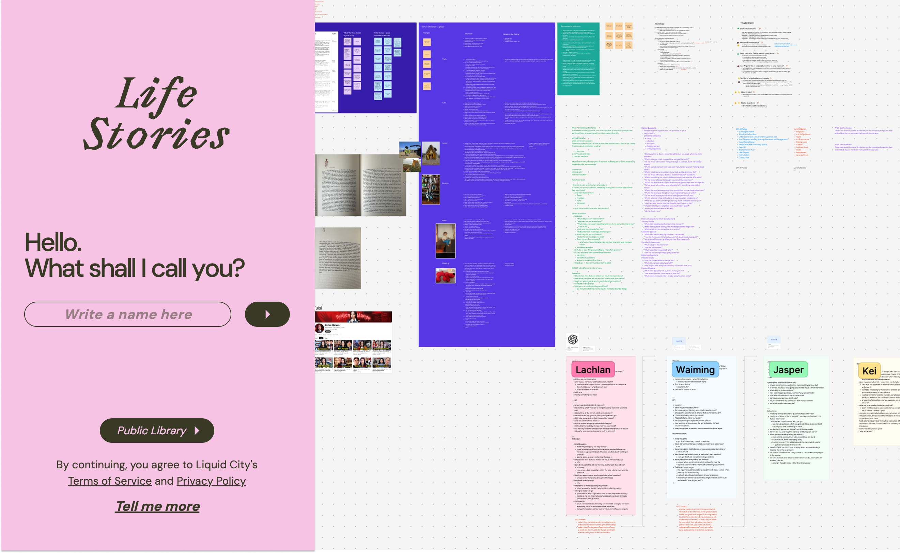
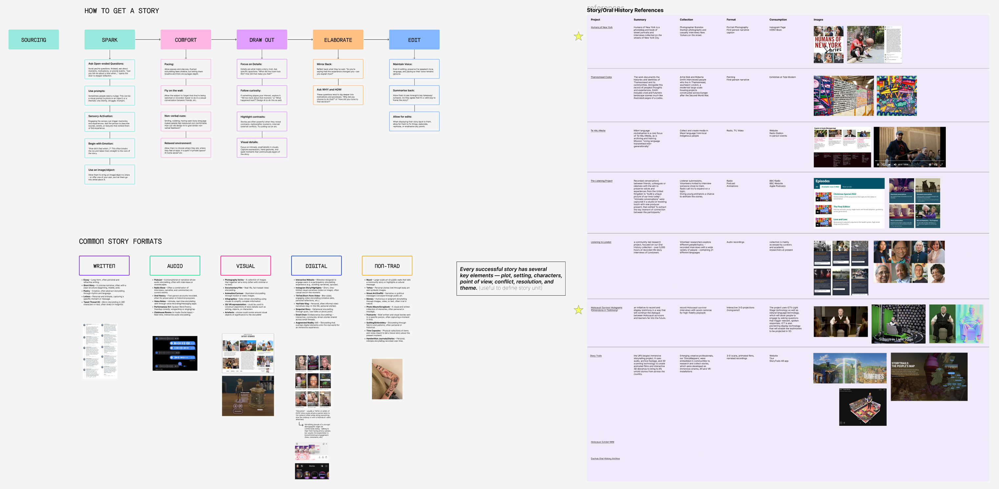
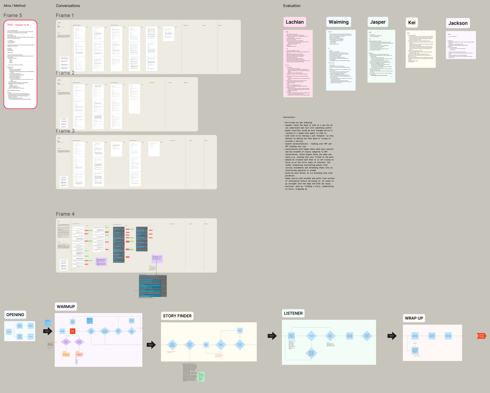
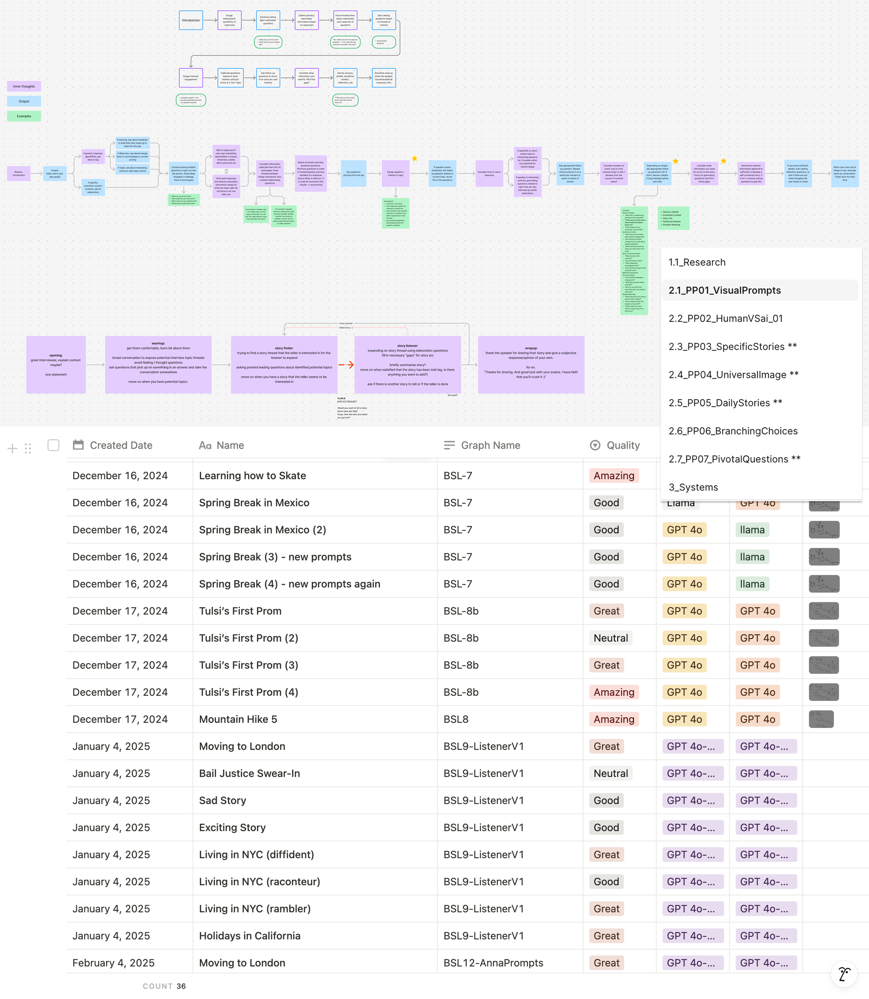
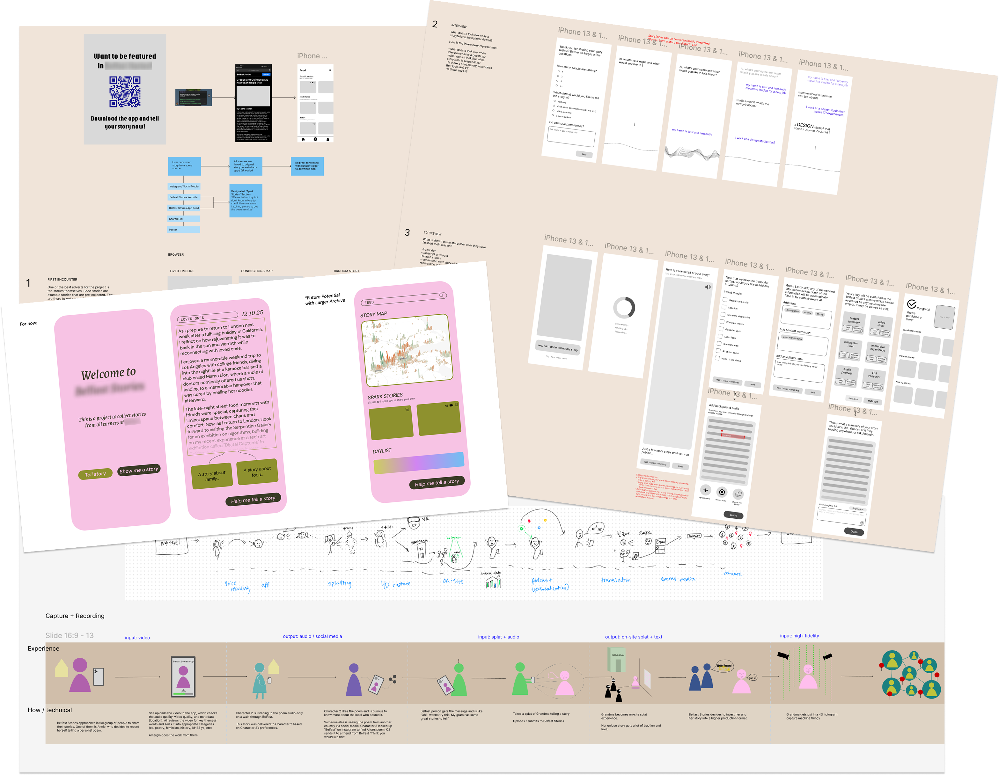

Tools: Figma, Notion, Parabrain
We all know how photographs record memory, but many have forgotten the oral tradition. I found it fascinating to imagine a world where you don't just have visual memories, but an archive of anecdotes. What kind of shape could that give to our memories?
A confidential client commissioned Liquid City to develop a scalable way of collecting and curating stories from diverse residents, including lesser-heard voices. We leveraged AI and Parabrain to create an adaptive interviewer agent that could attune to each person's unique language, storytelling style, and cultural nuances while outputting their story back to them in their own authentic voice.

As principal researcher and UX designer, I began by deconstructing storytelling itself, defining story components and what makes narratives compelling. I led a workshop to discover what people thought are "good stories." I considered format, length, point of view, etc.
Through impromptu interviews with coworkers (no prep, just conversation), I reverse-engineered the natural rhythm of story emergence: warm-up banter, thread exploration that reveals potential stories, deep listening where actual narratives unfold, then meaningful closure.
We also did a bunch of paper prototyping to explore other ways of story-sparking/telling. Can an AI-generated "universal" image spark memories for someone? What happens if we allow the interview to branch into numerous threads instead of keeping it to a single back and forth dialogue? All of this informed the following UX decisions.


I took that structure and translated it into a UX flow we could adapt for our AI interviewer agent. I started by prototyping bits of the flow with custom GPTs before building it into Parabrain, our in-house AI agent editor.
Working in Parabrain's node-based editor alongside our developer, I told the AI countless stories, evaluating conversation quality, question relevance, timing, and model performance. Did it feel natural? Were questions contextually relevant? Could it maintain narrative tension without overstaying its welcome? This process revealed a question hierarchy: factual anchoring first, then sensory/emotional deepening, finally existential contextualization that situates the story within someone's broader life arc.

Beyond the core conversation engine, I designed the complete user experience: interface layouts, interviewer embodiment options, story editing capabilities, and media integration features. We explored how AI could enhance these personal narratives - generating supportive images and audio that amplify emotional moments. I synthesized our entire approach into clear, accessible presentations for Belfast City Council, translating complex technical concepts into compelling community impact stories.
Impact: Created a scalable storytelling platform that honors individual voices while preserving community narratives, demonstrating how AI can serve as a bridge between traditional oral culture and digital preservation.
